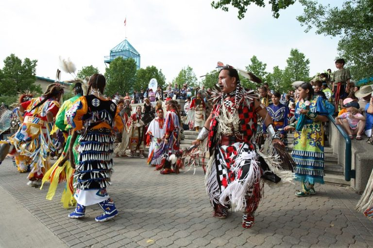

Manito Ahbee Festival 2026: Oct 30 to Nov 1, Winnipeg

The Manito Ahbee Festival returns to Canada Life Centre, 300 Portage Avenue, from Friday, October 30 to Sunday, November 1, 2026. The doors and the programming start at 6 p.m. on the Friday and at 9 a.m. on both the Saturday and the Sunday. We host a house in Crescentwood, about three kilometres southwest of that building. What follows is what we tell guests who have bought passes and have never been to a pow wow.
What the name carries, and why the pow wow is the centre of it
Manito Ahbee is Anishinaabemowin for "where the Creator sits", and it is the name of a sacred site in the western Whiteshell, one of the older gathering places on this continent. The festival was gifted that name through ceremony; it is not a marketing choice. The organisers describe the pow wow at the heart of the weekend as one of the largest in Canada and the second largest in North America, and the festival has now been running for about two decades.
For 2026 the weekend also carries the return of NextGEN, an Indigenous youth celebration, alongside the Ignite Our Spirit performance stage, a ball hockey tournament, the Indigenous Marketplace, and Red Road Runway, which showcases First Nations, Inuit and Métis fashion and art. A Friday evening cultural line-up was announced as part of the 2026 programme but the acts had not been named when we wrote this, so check the festival's own schedule page in the week before you travel rather than assuming last year's shape.
Tickets come from Ticketmaster, and that is the only place we send people
Passes are sold through Ticketmaster as day passes and as a weekend pass covering all three days. We are not going to quote you a price. The festival has not published a fixed scale we can stand behind, and a number repeated from a previous year is worse than no number at all, so read the listing for the day you want. The festival's own tickets page links straight through, and its office answers the phone at 204-956-1849 if something about a pass is unclear.
Getting there without a car, which is what we recommend
Portage Avenue is the arena's own street, which makes this one of the easier venues in the city to reach on a bus. From the Corydon blocks it is roughly a fifteen-minute walk east to Osborne Village, where the BLUE line picks up; it runs the Southwest Transitway and then turns onto Portage, so you step down within a block or two of the doors and never handle a transfer downtown. Winnipeg Transit lists the 2026 fare at $3.45 in cash or $3.10 on peggo e-cash, paid as you board, and drivers do not make change.
If you do drive, the parkade under True North Square has its entrance on Hargrave Street and an indoor connection to the arena. Cityplace, at Hargrave and St. Mary, is the other heated option. Saturday of this festival is Halloween, and downtown carries its own evening traffic that night on top of the event, so give yourself more room than the map suggests.
Canada Life Centre screens everyone through metal detectors before the ticket scan and limits the size of bags people carry in, with no bag check on site. Nothing you bring can be left at the door. The venue publishes the current policy in its fan guide, and reading it before you leave the house saves an argument at the door, particularly if you are travelling with children and the things children need.
The clocks go back on the Sunday morning
This is the fact that catches people. Daylight saving time ends at 2 a.m. on Sunday, November 1, 2026, in the middle of the festival weekend. You get an hour back, and the sun then sets just after five in the afternoon instead of just after six, so the Sunday feels shorter than the Saturday did even though it is longer. Set the alarm deliberately if you have a flight or a 9 a.m. start.
Weather Spark's normals put the end of October in Winnipeg at about 7°C by day and near freezing overnight, and November is the month that brings the city its heaviest snowfall of the year. The arena runs warm, the walk to it does not, and the block of Portage in front of the building is open enough that a north wind comes straight down it. A coat you can take off and sit on is the right answer.
Eating: the festival feeds you, and Hargrave Street is one block away
Food vendors operate inside the festival from 11 a.m. to 11 p.m. on the Friday and from 9 a.m. to 11 p.m. on the Saturday and Sunday, which covers the whole of the day for most visitors. When you want to step out, Hargrave St. Market at 242 Hargrave Street is a covered food hall a block from the arena with a dozen or so counters under one roof. The Exchange District sits a few blocks north if you want a sit-down dinner after the Saturday programme.
How a pow wow actually runs, if this is your first
Grand Entry opens each session: the dancers come in by category behind the eagle staffs and the flags, and the crowd stands. After that the arena MC runs the day, and following the MC is very nearly the whole of the etiquette: they say when to stand, when a song is an honour song, and when recording is not appropriate. Ask a dancer before you photograph them. What they are wearing is regalia, made by hand and often over years, and the word is not costume.
Sessions run long. You do not have to sit through all of one, and people move between the bowl and the marketplace all day. Children are welcome and there will be plenty of them.
Where to stay for Manito Ahbee
Our two-bedroom home is in Crescentwood, off Corydon Avenue, about three kilometres southwest of Canada Life Centre. That is a ten-minute drive outside rush hour, or the BLUE line ride described above, which means you can go downtown for a 9 a.m. Grand Entry and come back in the afternoon for a nap without either leg being an expedition. The street is quiet in a way that downtown is not on a Saturday night.
Late October and early November are busier here than visitors expect, and this year the festival lands on the Halloween weekend, so rooms across the city tighten earlier than usual. Our Airbnb listing shows what is open for those dates.
Sources and what to re-check: dates, venue, daily start times, the 2026 programme and the food vendor hours above come from the Manito Ahbee Festival and Canada Life Centre as of September 2026; fares from Winnipeg Transit; the end of daylight saving from the federal schedule. Programming and gate policies are set closer to the day, so confirm at manitoahbee.com before you travel.